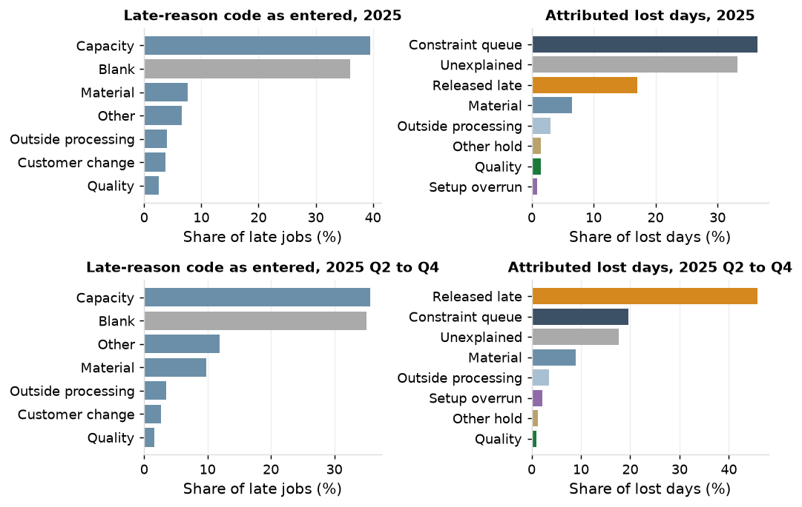
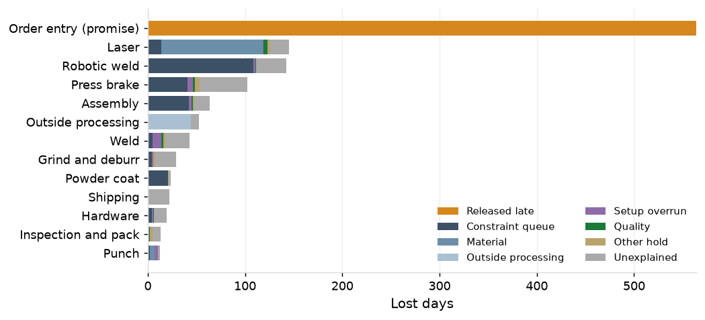
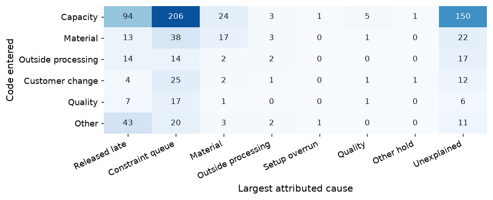

36% of late jobs carry no reason code. "Capacity" is 62% of entered codes for the year and 55% in Q2 to Q4, up from 46.5% in 2023. The entered code agrees with the largest attributed cause on 35.8% of coded late jobs against 31.3% expected by chance (31.3% against 26.1% in Q2 to Q4): the codes carry almost no information beyond their own frequencies. On the 390 coded jobs whose largest cause has a code of its own, agreement is 58.2% against 52.7% by chance.

For the year, constraint queue is 36% of the 4,647 lost days, unexplained 33%, released late 17%, material 6.5% and outside processing 3%; the year is the 2024 year-end build shipping in the first quarter.
In Q2 to Q4, released late is 46% of the 1,232 lost days and the largest cause on 191 of 379 late jobs; constraint queue is 20%, unexplained 18%, material 9% and outside processing 4%. In an ordinary quarter, close to half the days lost are on jobs promised inside the standard lead time before any work started.
| Cause | Lost days, 2025 | Share | Late jobs with the cause | Jobs where largest | Lost days, Q2 to Q4 | Share, Q2 to Q4 | Late jobs with the cause, Q2 to Q4 | Jobs where largest, Q2 to Q4 |
|---|---|---|---|---|---|---|---|---|
| Released late | 791 | 17.0% | 286 | 258 | 564 | 45.8% | 198 | 191 |
| Constraint queue | 1,693 | 36.4% | 789 | 504 | 241 | 19.6% | 145 | 81 |
| Material | 303 | 6.5% | 275 | 80 | 110 | 8.9% | 99 | 34 |
| Outside processing | 141 | 3.0% | 78 | 14 | 44 | 3.6% | 31 | 10 |
| Setup overrun | 41 | 0.9% | 40 | 3 | 27 | 2.2% | 7 | 3 |
| Quality | 67 | 1.4% | 93 | 9 | 11 | 0.9% | 24 | 3 |
| Other hold | 68 | 1.5% | 133 | 2 | 16 | 1.3% | 34 | 0 |
| Unexplained | 1,543 | 33.2% | 1,020 | 356 | 218 | 17.7% | 221 | 57 |
| Total | 4,647 | 100.0% | 1,226 | 1,226 | 1,232 | 100.0% | 379 | 379 |
In Q2 to Q4, order entry holds 46% of lost days (promises inside the standard lead time), the laser 12% (104 of its 145 days are material waits at the first cut), robotic weld 11.5% and the brakes 8%. For the year the brakes hold 25%, the laser 19% (the first-operation queue of November and December 2024) and order entry 17%.

The top ten customers hold 54% of lost days for the year and all are key accounts. In Q2 to Q4 released late is the largest cause for 8 of the ten. Clearwater Signal Inc. and Lakeside Conveyor Co. hold 25% of lost days for the year and 21% in Q2 to Q4.
94 jobs coded "capacity" were released late and 150 coded "capacity" have no attributable cause as their largest. Of the 80 jobs coded "other", 43 were released late; of the 484 coded "capacity", 206 had constraint queue as their largest cause. Material was coded on 33 of the 275 late jobs with a material wait, and on 17 of the 80 where material is the largest cause.

33% of lost days for the year and 18% in Q2 to Q4 match no rule. Of the 1,543 unexplained days for the year, 31% are brake queue above the on-time normal but below the threshold of the constraint rule, 18% are setup and run above normal with no overrun or rework recorded, and 11% are move. With the queue threshold at the 70th percentile the unexplained share is 25%; at the 90th, 46%. 76 of 1,226 late jobs (6.2%) have no cause assigned at all; 7 of 379 in Q2 to Q4.
Replace the late-reason code on the shipment with a buffer status record kept by production control: each job's time buffer in thirds, and a reason captured when the job turns red, from this list: promise inside the standard lead time; queue at a named work center; material short at the first cut; outside processing late; quality; hold by reason; unexplained. Review the record weekly in place of the late-reason Pareto.
Require the rush flag and a named approver on every promise inside the standard lead time (P7 sizes the quote). Extend the kit check to stock sheet items (P6 measures kit completeness).
Coverage: 1,226 late jobs and 4,647 lost days in 2025; 379 and 1,232 in Q2 to Q4. A job's lost days are its working days late. Lost days at a stage are the stage days above the median of on-time jobs of the same routing class shipped in the same quarter; the powder scheduling wait is not lost time.
Rules. Released late: the standard lead time of 10, 15 or 20 working days less the promised lead time, capped at days late, allocated first. Constraint queue: an operation with queue above its work center's 80th percentile for the quarter, or first-operation queue above its 80th percentile. Material: material wait at the first operation with a kit shortage or material hold recorded; a material hold at a later operation; or first-operation queue where the sheet issue came after planned start and followed a stock receipt of the same item, with the first work center's queue that week below its median. Outside processing: a line received after its promised date. Setup overrun: setup above standard by more than 2 hours and by more than twice standard. Quality: a recorded quality hold, or setup and run above normal on a job with a rework operation. Other hold: a recorded engineering, customer or tooling hold. Not attributable: the rest.
The days late remaining after released late are split across the stages' lost days in proportion; days at stages with no matching rule are unexplained.
Agreement compares the entered code with the cause holding the most lost days on the job: constraint queue and setup overrun count as capacity; material, outside processing and quality as their own codes; released late, other hold and unexplained as other. The chance level is the agreement expected if codes were assigned at the shop's code frequencies independently of the cause.
| Period shipped | Late jobs | Blank | Capacity share of entered codes |
|---|---|---|---|
| 2023 | 296 | 36.8% | 46.5% |
| 2024 | 386 | 34.2% | 60.2% |
| 2025 | 1,226 | 36.0% | 61.7% |
| 2025 Q2 to Q4 | 379 | 35.1% | 54.9% |
| Comparison | Period | Late jobs | Code agrees with largest attributed cause | Chance level | Over chance |
|---|---|---|---|---|---|
| All coded late jobs | 2025 | 785 | 35.8% | 31.3% | +4.5 points |
| All coded late jobs | 2025 Q2 to Q4 | 246 | 31.3% | 26.1% | +5.2 points |
| Jobs whose largest cause has a code | 2025 | 390 | 58.2% | 52.7% | +5.5 points |
| Jobs whose largest cause has a code | 2025 Q2 to Q4 | 89 | 47.2% | 38.0% | +9.2 points |
| Code entered | Released late | Constraint queue | Material | Outside processing | Setup overrun | Quality | Other hold | Unexplained |
|---|---|---|---|---|---|---|---|---|
| Capacity | 94 | 206 | 24 | 3 | 1 | 5 | 1 | 150 |
| Material | 13 | 38 | 17 | 3 | 0 | 1 | 0 | 22 |
| Outside processing | 14 | 14 | 2 | 2 | 0 | 0 | 0 | 17 |
| Customer change | 4 | 25 | 2 | 1 | 0 | 1 | 1 | 12 |
| Quality | 7 | 17 | 1 | 0 | 0 | 1 | 0 | 6 |
| Other | 43 | 20 | 3 | 2 | 1 | 0 | 0 | 11 |
| Work center | Lost days | Share | Released late | Constraint queue | Material | Outside processing | Setup overrun | Quality | Other hold | Unexplained |
|---|---|---|---|---|---|---|---|---|---|---|
| Press brake | 1,152 | 24.8% | 0 | 558 | 1 | 0 | 11 | 12 | 13 | 557 |
| Laser | 867 | 18.7% | 0 | 401 | 255 | 0 | 1 | 14 | 13 | 182 |
| Order entry (promise) | 791 | 17.0% | 791 | 0 | 0 | 0 | 0 | 0 | 0 | 0 |
| Assembly | 306 | 6.6% | 0 | 161 | 0 | 0 | 5 | 5 | 3 | 132 |
| Grind and deburr | 276 | 5.9% | 0 | 105 | 0 | 0 | 2 | 2 | 9 | 158 |
| Robotic weld | 266 | 5.7% | 0 | 183 | 0 | 0 | 2 | 3 | 1 | 76 |
| Weld | 253 | 5.4% | 0 | 99 | 0 | 0 | 12 | 19 | 2 | 121 |
| Outside processing | 170 | 3.7% | 0 | 0 | 0 | 141 | 0 | 0 | 3 | 26 |
| Powder coat | 128 | 2.8% | 0 | 104 | 0 | 0 | 1 | 1 | 6 | 18 |
| Punch | 124 | 2.7% | 0 | 39 | 46 | 0 | 3 | 0 | 3 | 33 |
| Shipping | 120 | 2.6% | 0 | 0 | 0 | 0 | 0 | 0 | 0 | 120 |
| Hardware | 105 | 2.3% | 0 | 23 | 0 | 0 | 2 | 6 | 3 | 70 |
| Inspection and pack | 88 | 1.9% | 0 | 21 | 1 | 0 | 1 | 5 | 12 | 49 |
| No stage above normal | 2 | 0.0% | 0 | 0 | 0 | 0 | 0 | 0 | 0 | 2 |
| Work center | Lost days | Share | Released late | Constraint queue | Material | Outside processing | Setup overrun | Quality | Other hold | Unexplained |
|---|---|---|---|---|---|---|---|---|---|---|
| Order entry (promise) | 564 | 45.8% | 564 | 0 | 0 | 0 | 0 | 0 | 0 | 0 |
| Laser | 145 | 11.8% | 0 | 14 | 104 | 0 | 1 | 4 | 3 | 19 |
| Robotic weld | 142 | 11.5% | 0 | 109 | 0 | 0 | 2 | 1 | 0 | 31 |
| Press brake | 102 | 8.3% | 0 | 41 | 0 | 0 | 6 | 2 | 5 | 49 |
| Assembly | 63 | 5.1% | 0 | 43 | 0 | 0 | 3 | 1 | 1 | 16 |
| Outside processing | 52 | 4.3% | 0 | 0 | 0 | 44 | 0 | 0 | 0 | 8 |
| Weld | 43 | 3.5% | 0 | 5 | 0 | 0 | 9 | 2 | 2 | 25 |
| Grind and deburr | 29 | 2.4% | 0 | 4 | 0 | 0 | 1 | 0 | 1 | 22 |
| Powder coat | 24 | 1.9% | 0 | 21 | 0 | 0 | 0 | 0 | 0 | 2 |
| Shipping | 22 | 1.8% | 0 | 0 | 0 | 0 | 0 | 0 | 0 | 22 |
| Hardware | 19 | 1.6% | 0 | 4 | 0 | 0 | 1 | 1 | 0 | 13 |
| Inspection and pack | 13 | 1.1% | 0 | 0 | 0 | 0 | 1 | 1 | 3 | 8 |
| Punch | 13 | 1.0% | 0 | 2 | 5 | 0 | 3 | 0 | 1 | 2 |
| Customer | Key account | Jobs shipped | Late jobs | On time | Lost days | Share of lost days | Cumulative share | Largest cause |
|---|---|---|---|---|---|---|---|---|
| Clearwater Signal Inc. | yes | 706 | 171 | 75.8% | 665 | 14.3% | 14.3% | Constraint queue |
| Lakeside Conveyor Co. | yes | 754 | 160 | 78.8% | 497 | 10.7% | 25.0% | Unexplained |
| Horizon Trailer Co. | yes | 391 | 80 | 79.5% | 247 | 5.3% | 30.3% | Constraint queue |
| Sterling Health Systems Inc. | yes | 170 | 49 | 71.2% | 199 | 4.3% | 34.6% | Constraint queue |
| Cedar Controls LLC | yes | 177 | 53 | 70.1% | 191 | 4.1% | 38.7% | Constraint queue |
| Harbor Medical Ltd. | yes | 173 | 44 | 74.6% | 175 | 3.8% | 42.5% | Constraint queue |
| Westbrook Networks Co. | yes | 167 | 43 | 74.3% | 174 | 3.7% | 46.2% | Constraint queue |
| Heritage Vehicle Systems Inc. | yes | 139 | 40 | 71.2% | 143 | 3.1% | 49.3% | Unexplained |
| Sterling Farm Systems Co. | yes | 121 | 18 | 85.1% | 111 | 2.4% | 51.7% | Constraint queue |
| Union Climate Products Corp. | yes | 74 | 20 | 73.0% | 97 | 2.1% | 53.8% | Constraint queue |
| Customer | Key account | Jobs shipped | Late jobs | On time | Lost days | Share of lost days | Cumulative share | Largest cause |
|---|---|---|---|---|---|---|---|---|
| Clearwater Signal Inc. | yes | 510 | 40 | 92.2% | 135 | 11.0% | 11.0% | Constraint queue |
| Lakeside Conveyor Co. | yes | 539 | 40 | 92.6% | 129 | 10.5% | 21.4% | Released late |
| Heritage Vehicle Systems Inc. | yes | 98 | 13 | 86.7% | 60 | 4.9% | 26.3% | Released late |
| Sterling Health Systems Inc. | yes | 126 | 19 | 84.9% | 57 | 4.6% | 30.9% | Released late |
| Harbor Medical Ltd. | yes | 130 | 15 | 88.5% | 54 | 4.4% | 35.3% | Released late |
| Cedar Controls LLC | yes | 128 | 19 | 85.2% | 50 | 4.1% | 39.4% | Released late |
| Horizon Trailer Co. | yes | 274 | 20 | 92.7% | 46 | 3.7% | 43.1% | Released late |
| Highland Electrical Products Inc. | yes | 59 | 11 | 81.4% | 35 | 2.8% | 45.9% | Released late |
| Riverside Climate Products Inc. | no | 31 | 6 | 80.6% | 28 | 2.3% | 48.2% | Constraint queue |
| Pinnacle Transit Products Ltd. | yes | 49 | 7 | 85.7% | 26 | 2.1% | 50.3% | Released late |
| Stage | Unexplained days, 2025 | Share | Unexplained days, Q2 to Q4 | Share, Q2 to Q4 |
|---|---|---|---|---|
| Queue: press brake | 479 | 31.0% | 34 | 15.8% |
| Setup and run | 278 | 18.0% | 64 | 29.5% |
| Move | 177 | 11.5% | 29 | 13.2% |
| Complete to ship | 120 | 7.8% | 22 | 10.3% |
| Queue: assembly | 83 | 5.4% | 3 | 1.5% |
| First-operation queue | 75 | 4.9% | 6 | 2.8% |
| Queue: grind and deburr | 68 | 4.4% | 5 | 2.4% |
| Material wait at first operation | 57 | 3.7% | 6 | 2.9% |
| Queue: robotic weld | 52 | 3.3% | 24 | 11.1% |
| Release to traveler print | 47 | 3.1% | 2 | 1.0% |
| Queue: weld | 37 | 2.4% | 4 | 1.9% |
| Queue: hardware | 32 | 2.1% | 8 | 3.5% |
| Outside processing | 26 | 1.7% | 8 | 3.8% |
| Hold: other | 5 | 0.3% | 1 | 0.4% |
| Queue: inspection and pack | 3 | 0.2% | 0 | 0.0% |
| Queue: powder coat | 3 | 0.2% | 0 | 0.0% |
| No stage above normal | 2 | 0.1% | 0 | 0.0% |
| Total | 1,543 | 100.0% | 218 | 100.0% |
| Queue threshold of the constraint rule | Constraint queue, 2025 | Unexplained, 2025 | Constraint queue, Q2 to Q4 | Unexplained, Q2 to Q4 |
|---|---|---|---|---|
| 70th percentile | 44.3% | 25.4% | 22.8% | 14.5% |
| 80th percentile (the rule) | 36.4% | 33.2% | 19.6% | 17.7% |
| 90th percentile | 23.2% | 46.4% | 13.5% | 23.8% |